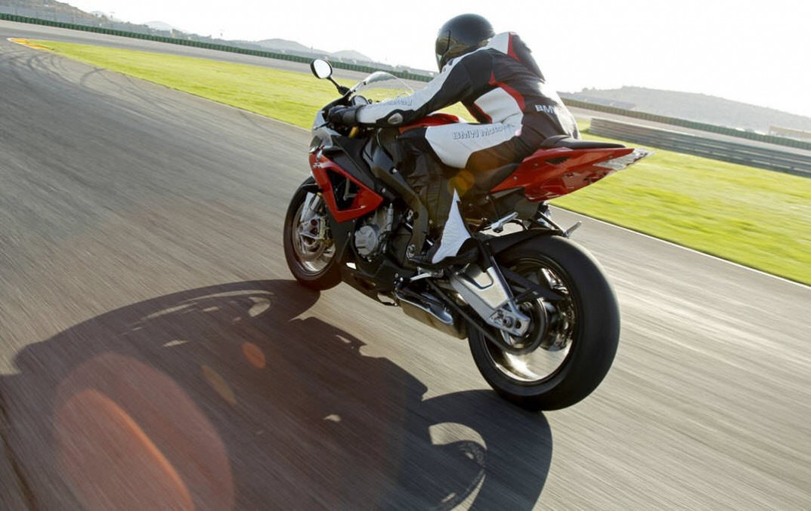
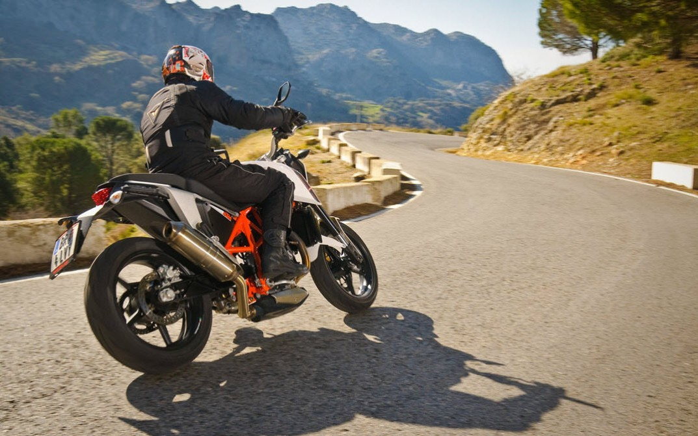

Usar casco es lo primero que deberías aprender a la hora de conducir una moto, pero este tiene que ser de buena calidad. Ni se te ocurra llevarlo posado o en el codo, pues de nada sirve. Lleva siempre un casco homologado y en perfectas condiciones. Lo mejor es que conozcas bien los tipos de cascos que existen y toda la equipación de motorista que puedes llevar y que elijas la que mejor cubra tus necesidades.
#2 FRENA CON LOS DOS FRENOS Es muy importante hacerlo convenientemente, así que lo mejor es que vayas practicando. Nunca frenes sólo con el freno delantero cuando vayas a mucha velocidad o el asfalto esté mojado, si no sabes hacerlo del modo correcto es muy peligroso.
#3 ANTICÍPATE A LAS EMERGENCIAS Conduce con prudencia y a la defensiva y trata de anticiparte a cualquier situación de riesgo. Recuerda que para otros vehículos puedes llegar a ser invisible.
#4 AGÁCHATE SI VAS RÁPIDO
#5 PRESTA ATENCIÓN Cuando vayas a pasar un cruce, conviene que mires a la izquierda, luego a la derecha y otra vez a la izquierda, por si acaso. En general, estar prevenido ante cualquier eventualidad es siempre un buen consejo…
#6 MODERA LA VELOCIDAD
